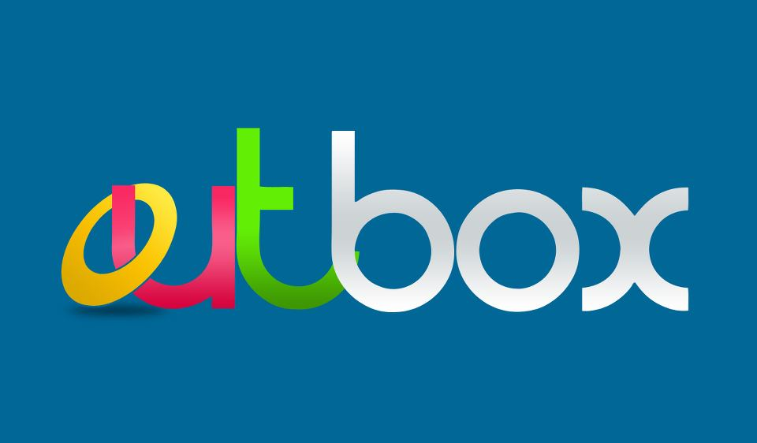

Hello world!
Rails Girls comes to Kampala! During the free two-day workshop we'll dive into the magical world of Ruby on Rails.
Apply now! Applications are open until the 20th of April.
You learn designing, prototyping and coding with the help from our coaches.
You need your own laptop, curiosity and a sprinkle of imagination!
Want to help? We are looking for volunteers and Rails coaches. Email us.
| 18.00 - |
Installation partyGet know the attendees a little bit before hand. Bring your laptop if you can, so we can install Ruby on Rails for you. |
|---|---|
| 21.00 - |
Coach dinnerAll of the coaches are welcome to our coach dinner, where we'll go through the program for the next day. |
| 9:00 - 10:00 |
Registration, coffeeRails Girls workshop includes learning the first steps into software craftmanship in small teams.Along with actual coding, you'll get to hear great lightning talks, learn the language of web and meet other likeminded women. |
|---|---|
| 10:00 - 10:15 |
WelcomeOutline of the day & word from sponsors |
| 10:20 - 10:45 |
Designing your web app -workshop |
| 10:50 - 11:10 |
Tryruby.orgLet's get coding! |
| 11:10 - 13:00 |
WORKSHOPJumpstart your first web application |
| 13:00 - 13:30 | Lunch |
| 13.30- 13:45 |
Bentobox - Understanding Web AppsRecap of what we’ve learned and how it all fits together. |
| 13:45 - 14:30 |
Lightning talks from coaches |
| 14:30 - 16:30 |
WORKSHOPExtend your application. |
| 20:00 - |
AfterpartyOpen for everyone, meet cool people interested in tech. |
Applications close: April, 20th
Acceptances informed:April 22nd
Rails Girls Kampala is co-organized with our awesome partners.
Want to help? We're looking for partners & sponsors for the non-profit event! Email us!
Outbox is an acceleration program for promising mobile and web startups, helping them refine their businesses and raise funding through Outbox’s network of investors with the intention of helping them grow their businesses
Outbox hub is a space for collaboration that supports techies and further support for people to turn their tech ideas into businesses.
How much does the workshop cost? Nothing, it's free! You just need to be excited!
Who is this aimed for? Women of any age with basic knowledge of working with a computer. We’ve had people of all ages taking part. Most of the speeches are given in english, but small group work is done in german. Please bring your laptop.
Can men attend? Yes, but you need to be accompanied by an interested lady. Also, girls are given a priority.
I know how to program - How can I help? We’re also looking for people to be coaches. We’ll have a two-three hour workshop before the event to walk you through the curriculum. Email us
 Kevin Janvier
RailsGirls Kampala
Kevin Janvier
RailsGirls Kampala